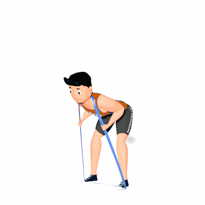

Good Morning com Faixa Elástica

O exercício auxilia a fortalecer a região lombar, tornando-a mais resistente a lesões.
Ficha Técnica
Tipo: Funcional
Grupo Muscular: Costas
Aparelho: Nenhum
Músculos: Nenhum
Como realizar
- Fique dentro de uma faixa em círculo, com um lado sobre os ombros e o outro sob os arcos dos pés, como se estivesse fazendo um agachamento com resistência;
- A partir daqui, empurre seus quadris o mais para trás possível, permitindo apenas uma ligeira flexão dos joelhos para abaixar o tronco até ficar quase paralelo ao chão;
- Pause, pressione os calcanhares e estenda os quadris para voltar a ficar ereto.
 RC STORE
RC STORE